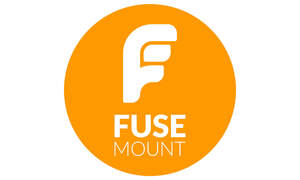
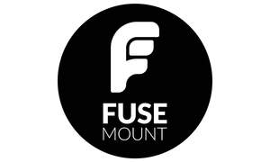

Trade Mark Journal No.2025/033 15 August 2025
UK00004244228 4 August 2025 (9)
Mark 1

Mark 2

- Class 9
- Camera mounts; Camera lens mounts; Helmet camera mounts; Camera tripods; Motion tracking mounts for cameras; Camera lens adapters; Camera monopods; Camera bipods; Camera straps; Camera lenses; Mounting devices for cameras; Smartphone camera lenses; Camera casings; Slide film mounts; Tripods for cameras; Tripods [for cameras]; Camera hoods; Gimbals for cameras; Camera stands; Cameras; Video camera stands; Lenses for video cameras; Camera filters; Camera flashes; Bellows for cameras; Camera goggles; Camera shutters; Lenses for cameras; Lens hoods [for cameras]; Zoom lenses for cameras; Camera covers; Lens filters [for cameras]; Camera cases; Cameras [photography]; Adapter rings for attaching objectives on cameras; Viewfinders [for cameras]; Plate cameras; Waterproof camera cases; Dashboard mounts for mobile phones; Photographic cameras; Mirrorless cameras; Fisheye lenses for cameras; Video cameras; Television camera tubes; TV wall mounts; Helmet cameras; Slings for cameras; Dashboard cameras; Photographic flash units for cameras; Photographic flash units [for cameras]; Flash guns for cameras; Flash guns [for cameras]; Underwater cameras; Dashboard mounts for navigation devices; Tilting heads [for cameras]; 360º cameras; Camera closures; 360º video cameras; Film cameras; Digital single-lens reflex (DSLR) cameras; Motion-activated cameras; Bags for cameras and photographic equipment; Trail cameras; Onboard cameras; Monopods used to take photographs by positioning a smartphone or camera beyond the normal range of the arm; Exposed camera film; Action cameras; Cinematographic cameras; Cameras (Cinematographic -); Head mounted stereoscopic displays; Flash lamps [for cameras]; Flash lamps for cameras; Head mounted monoscopic displays; Video surveillance cameras; Infrared cameras; Rearview cameras for vehicles; Surveillance cameras; Digital video cameras; Shutters [for cameras]; Cameras shutters; Bags for cameras; Digital cameras; Tripods for binoculars; Spools for cameras; Cameras for smartphones; Flashlamps for cameras; Mounting devices for monitors; Conferencing cameras; Motion picture cameras; Photographic cameras for the instant production of pictures; Cameras for vehicles; Shutter releases [for cameras]; Light filters for cameras; View cameras; Camera containing a linear image sensor; Telescopic lens sights; Selfie sticks [hand-held monopods]; Portable video cameras with built-in videocassette recorders; Selfie lenses; Disposable cameras; Mounting racks for computer hardware; Range finders [for cameras]; Range finders for cameras.
Richard Googe